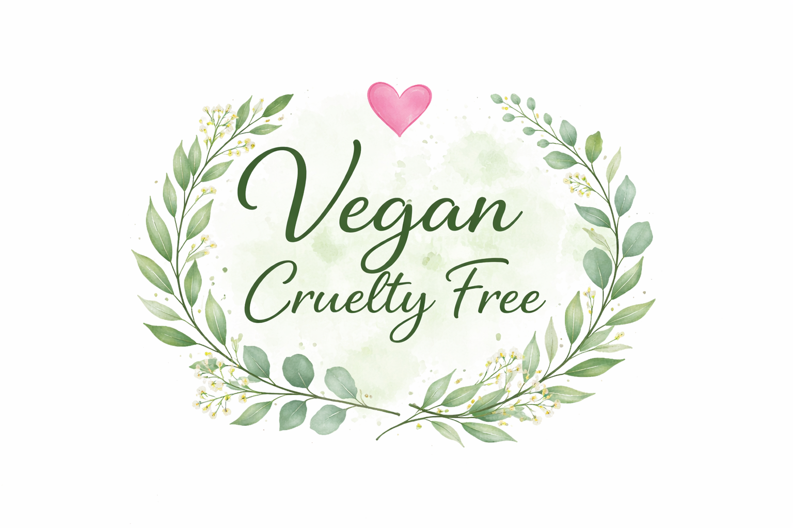

מידע
הסברים קצרים ושאלות נפוצות שיעזרו לקנות חכם ולהבין על מה כדאי להסתכל.
כלים קטנים שיעזרו לך לקנות עם לב שלם – בלי ללכת לאיבוד בין לוגואים, הצהרות ורשימות שונות.
מה זה “לא נוסו על בעלי חיים” (Cruelty‑Free)?
“לא נוסו על בעלי חיים” מתייחס למדיניות ניסויים (מוצר סופי + רכיבים + ספקים). באתר הזה הסינון הוא כפול — אנחנו מציגים רק מה שהוא גם 100% טבעוני וגם לא נוסו על בעלי חיים.
למה חשוב לבדוק תעודות?
כי לא כל מי שכותב “לא ניסינו” באמת עומד בסטנדרט. תעודה טובה היא לרוב תהליך עם בדיקות, תיעוד וחידוש.
טבעוני ≠ לא נוסו על בעלי חיים
טבעוני = בלי רכיבים מן החי. לא נוסו על בעלי חיים = בלי ניסויים. זה יכול לחפוף – אבל לא תמיד.
הבדלים חשובים: Leaping Bunny / CFI מול PETA
ההבדל בין הארגונים הללו משמעותי – בעיקר ברמת הפיקוח ותהליך האימות שהמותגים עוברים.
| תכונה | Leaping Bunny / CFI | PETA |
|---|---|---|
| רמת אמינות | גבוהה מאוד (ביקורות חיצוניות) | בינונית (הצהרה בלבד) |
| בדיקת ספקים | חובה (מערכת ניטור מתועדת) | הצהרה כללית של המותג |
| ביקורות (Audits) | כן, באופן קבוע | לא |
| חידוש שנתי | כן | לא תמיד (לרוב הצהרה חד פעמית) |
| תפוצה | בינלאומית (דרך CFI) | בינלאומית |
1) Leaping Bunny ("הארנב המנתר")
נחשב ל“תקן הזהב” בעולם הקרואלטי‑פרי.
- אימות מחמיר: לא רק הצהרה – נדרשת מערכת ניטור ספקים והסכמה לביקורות חיצוניות.
- Fixed Cut‑off Date: החברה קובעת תאריך שממנו והלאה היא וספקיה לא מבצעים ניסויים.
- חידוש: התחייבות מתחדשת מדי שנה.
2) לקנות ללא אכזריות International (CFI)
זהו הגוף העולמי (בריטניה) שמפעיל את תוכנית Leaping Bunny מחוץ לצפון אמריקה.
- במילים פשוטות: כשאת רואה לוגו Leaping Bunny על מותג בינלאומי – לעיתים קרובות האישור מגיע דרך CFI.
- למה זה מבלבל? leapingbunny.org מציג בעיקר מותגים של השלוחה האמריקאית; מותגי intl רבים יופיעו דווקא באתר CFI.
3) PETA (Beauty Without Bunnies)
רשימה גדולה יותר, כי קל יותר להיכנס אליה: בדרך כלל מדובר בשאלון + הצהרת אמון חתומה (ללא ביקורות עצמאיות אצל ספקים/מפעלים).
- יתרון: הרבה מותגים זמינים ברשימה.
- חיסרון: פחות פיקוח חיצוני לעומת Leaping Bunny / CFI.
- יש גם גרסה טבעונית של PETA (לא נוסו על בעלי חיים + טבעוני).